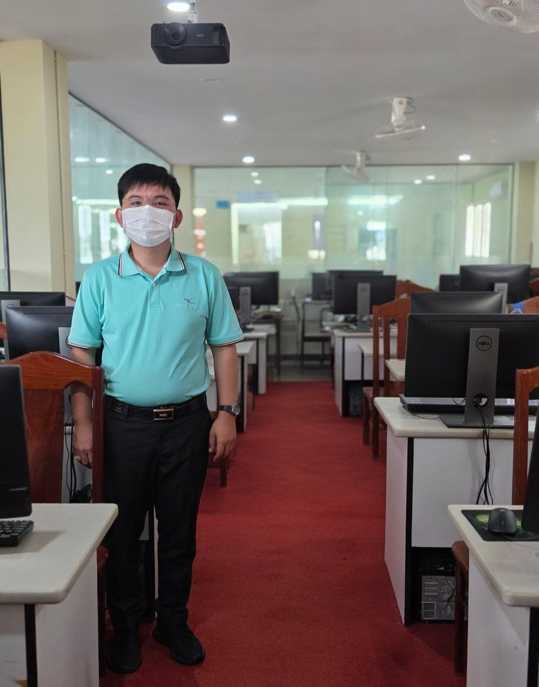

មន្ត្រីរាជការ និងជាអ្នកជំនាញបច្ចេកវិទ្យា ដែលមានមូលដ្ឋានគ្រឹះរឹងមាំទាំងផ្នែក សុខាភិបាល និង វិទ្យាសាស្ត្រកុំព្យូទ័រ។

លោក ឡាយ ប៊ុនលាប គឺជាកូនខ្មែរមួយរូបដែលមានស្រុកកំណើតនៅលើទឹកដីប្រវត្តិសាស្ត្រនៃខេត្តកំពត ដែលជាទឹកដីពោរពេញទៅដោយខ្យល់អាកាសបរិសុទ្ធនៃតំបន់សមុទ្រនិងជួរភ្នំ។ ផ្លូវជីវិតរបស់លោកមិនមែនក្រាលដោយផ្កាកុលាបនោះឡើយ។ លោកបានចាប់កំណើត និងធំដឹងក្តីឡើងដោយត្រូវឆ្លងកាត់នូវព្យុះភ្លៀង ឧបសគ្គ និងការលំបាកជាច្រើនរាប់មិនអស់ ទាំងជីវភាពរស់នៅ និងការសិក្សាអប់រំ។
ទោះបីជាត្រូវប្រឈមមុខនឹងភាពរលាក់នៃជីវិតយ៉ាងណាក៏ដោយ ក៏លោកមិនដែលបណ្តោយឱ្យព្រះជតាកម្មជាអ្នកកំណត់វាសនារបស់លោកឡើយ។ ផ្ទុយទៅវិញ សម្ពាធទាំងឡាយបានក្លាយជាកម្លាំងចលកររុញច្រានឱ្យលោកកាន់តែមានការតាំងចិត្តខ្ពស់ មិនចេះបោះបង់ចោលនូវក្តីស្រមៃ និងតែងតែប្រកាន់ខ្ជាប់នូវគោលជំហរតស៊ូស្វែងរកពន្លឺនាពេលអនាគតជានិច្ច。
លោក ឡាយ ប៊ុនលាប គឺជាបុគ្គលដែលមានទស្សនវិស័យទូលំទូលាយ ដោយលោកបានសម្រេចចិត្តសិក្សាជំនាញសំខាន់ៗពីរខុសគ្នា ប៉ុន្តែសុទ្ធសឹងតែជាវិស័យស្នូលក្នុងការអភិវឌ្ឍសង្គមជាតិ៖
ដោយសារតែមានទឹកចិត្តអាណិតស្រឡាញ់ និងចង់ជួយសង្គ្រោះជីវិតមនុស្ស លោកបានសម្រេចចិត្តចាប់យកជំនាញគិលានុបដ្ឋាក。ជំនាញមួយនេះមិនមែនត្រឹមតែជាការសិក្សាដើម្បីអាជីពនោះទេ ប៉ុន្តែវាស្ដែងចេញពីបេះដូងដ៏បរិសុទ្ធ ដែលចង់ឃើញអ្នកដទៃមានសុខភាពល្អ និងចង់រួមចំណែកកាត់បន្ថយភាពឈឺចាប់របស់ប្រជាពលរដ្ឋក្នុងសហគមន៍。
មិនត្រឹមតែមានចំណេះដឹងខាងវិស័យសុខាភិបាលនោះទេ លោក ប៊ុនលាប ក៏ជាបុគ្គលដើរទាន់សម័យកាលផងដែរ។ លោកបានបន្តការសិក្សាថ្នាក់បរិញ្ញាបត្រវិទ្យាសាស្ត្រកុំព្យូទ័រ ដែលជាជំនាញបច្ចេកវិទ្យាដ៏មានសារៈសំខាន់មិនអាចខ្វះបានក្នុងយុគសម័យឌីជីថល។ ការរួមបញ្ចូលគ្នារវាងជំនាញសុខាភិបាល និងបច្ចេកវិទ្យា បានធ្វើឱ្យលោកក្លាយជាធនធានមនុស្សដ៏កម្រ និងមានសក្តានុពលខ្ពស់。
មុននឹងទទួលបានផ្លែផ្កាដូចពេលបច្ចុប្បន្ន លោក ឡាយ ប៊ុនលាប ធ្លាប់បានឆ្លងកាត់របត់ជីវិតដ៏ជូរចត់ និងការលំបាកយ៉ាងខ្លាំង។ លោកធ្លាប់បានចូលបម្រើការងារនៅក្នុងគ្លីនិកឯកជនមួយកន្លែង ស្ថិតក្នុងស្រុកទឹកឈូ ខេត្តកំពត។ នៅទីនោះ លោកត្រូវរែកពន់ការងារយ៉ាងធ្ងន់ធ្ងរ ដោយត្រូវបំពេញភារកិច្ចទាំងយប់ទាំងថ្ងៃ មិនថាពេលមេឃស្រឡះ ឬមានព្យុះភ្លៀង ពេលខ្លះត្រូវអត់ងងុយដើម្បីមើលថែទាំអ្នកជំងឺ។ បទពិសោធន៍នៃការនឿយហត់ ការប្រកួតប្រជែង និងសម្ពាធការងារនៅគ្លីនិកឯកជននាពេលនោះ បានសាកល្បងចិត្តអំណត់របស់លោកយ៉ាងខ្លាំង ប៉ុន្តែវាក៏ជាសាលារៀនជីវិតដ៏អស្ចារ្យ ដែលបានជួយដុសខាត់ឱ្យលោកកាន់តែមានភាពរឹងមាំ មានការយល់ដឹងស៊ីជម្រៅពីតម្លៃនៃជីវិត និងយល់ច្បាស់ពីទុក្ខលំបាករបស់អ្នកជំងឺ。
បន្ទាប់ពីបានហែលឆ្លងមហាសមុទ្រនៃទុក្ខលំបាក និងការលះបង់យ៉ាងច្រើនឥតគណនា ពេលនេះពន្លឺនៃភាពជោគជ័យបានជះមកលើជីវិតរបស់លោកហើយ។ បច្ចុប្បន្ន លោក ឡាយ ប៊ុនលាប បានប្រលងជាប់ និងក្លាយជាមន្ត្រីកិច្ចព្រមព្រៀង (ស្ថិតក្នុងក្របខណ្ឌរដ្ឋ) ដោយកំពុងបំពេញភារកិច្ចបម្រើការងារយ៉ាងសកម្មនៅលើទឹកដីវប្បធម៌ប្រវត្តិសាស្ត្រ គឺខេត្តសៀមរាប。
ការទទួលបានតួនាទីជាមន្ត្រីរាជការនេះ មិនត្រឹមតែជាមោទនភាពផ្ទាល់ខ្លួន និងក្រុមគ្រួសារប៉ុណ្ណោះទេ ប៉ុន្តែវាគឺជាសក្ខីកម្មសក្ដិសមបំផុត បញ្ជាក់ពីការតបស្នងនៃផលបុណ្យដែលកើតចេញពីការខិតខំប្រឹងប្រែង ភាពស្មោះត្រង់ និងទឹកចិត្តលះបង់របស់លោកនាពេលកន្លងមក។ ក្នុងនាមជាមន្ត្រីបំពេញការងារជូនរដ្ឋ លោក ប៊ុនលាប កំពុងតែប្រើប្រាស់ទាំងចំណេះដឹងបច្ចេកវិទ្យា ទាំងជំនាញទន់ និងបទពិសោធន៍ជីវិតដែលធ្លាប់មាន ដើម្បីបម្រើផលប្រយោជន៍ជូនប្រជាពលរដ្ឋ និងរួមចំណែកអភិវឌ្ឍសង្គមជាតិមាតុភូមិឱ្យកាន់តែរីកចម្រើនទៅមុខ។
រាល់ការលំបាក និងការឈឺចាប់ក្នុងអតីតកាល មិនមែនជាជញ្ជាំងខណ្ឌបាំងផ្លូវយើងនោះទេ ប៉ុន្តែវាគឺជាកាំជណ្តើរដែលជួយរុញច្រានយើងឱ្យឈានទៅដល់ចំណុចខ្ពស់បំផុតនៃជីវិត។
បម្រើសេវាសុខាភិបាលជូនប្រជាពលរដ្ឋ
រចនាផ្ទៃកម្មវិធីទូរស័ព្ទទំនើប
ប្រព័ន្ធគ្រប់គ្រងទិន្នន័យកម្រិតខ្ពស់